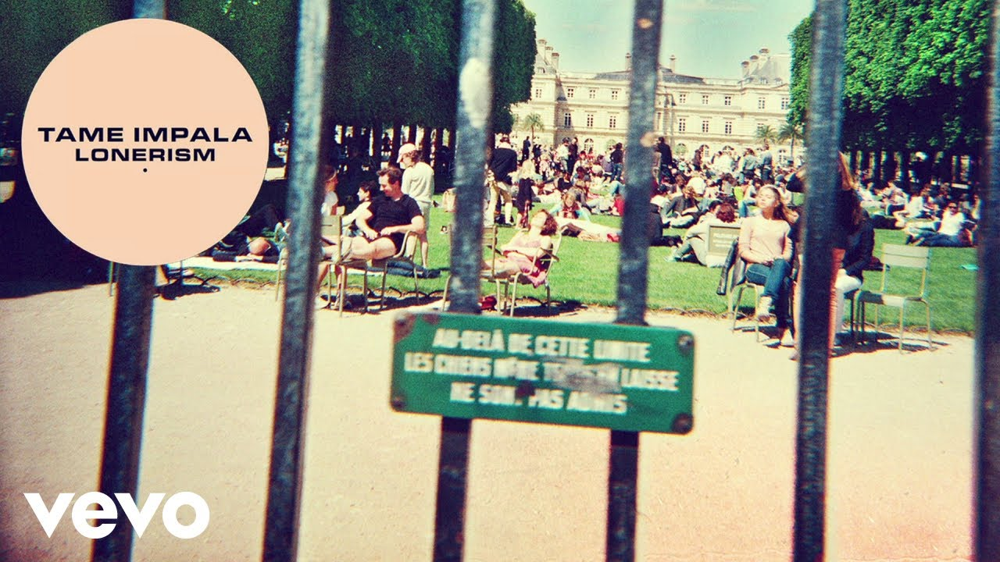

Lonerism
El albúm Lonerism, está cargado de sintetizadores y diversos elementos sonoros que hacen una mezcla elaborada y mucho más psicodélica que su disco anterior, Innerspeaker, en el que las guitarras predominan a lo largo de todo el disco dándole un tinte más rocanrolero.

Canciones
- Elephant(Todd Rundgren version)
- Nothing that has happen
- Be above it
- Keep on lying
- Why won't they talk to me?
- Feels like we only go backwards
- Elephant (Canyons Woolly mammoth extinction)
- Sun's coming up
- Elephant
- Music to walk home by
- Mind Mishief
- She just won't believe me
- Apocolypse dreams
- Endors toi
Menú
INICIO
INNERSPEAKER
CURRENTS
THESLOWRUSH
COLLABS
Contacto y más
GALERÍA
TAME IMPALA EN SPOTIFY
CONTACTO
FORMULARIO